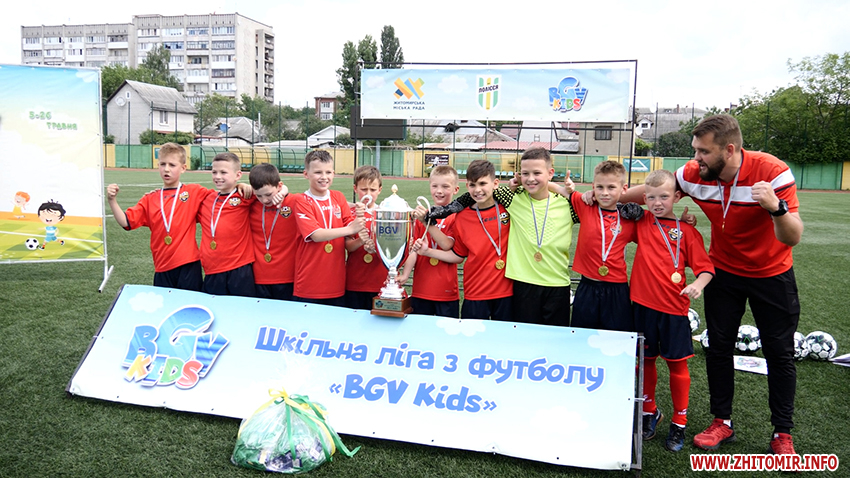

Наш ліцей працює вже 33 років
В нашому ліцею працює поліцейська яка слідкує за порядком
В нашому ліцею працює 115 висококваліфікцованих вчителів
В нашому ліцею вивчають іноземні мови такі як: французька, німецька, англійська та польська. Ще у нашому ліцею поглиблене вивчення англійської мови. Координація зусиль педагогів зосереджена на дослідженні науково-методичної проблеми гімназії "Життєтворчі компетенції особистості " та її шести модулях: життєпізнання, життєпередбачення, життєсамовизначення, життєздійснення, життєвдосконалення, життєорганізація. У життєвому просторі гімназії реалізується сучасний підхід до організації навчально-виховного процесу, який включає формування світогляду учнів, що базується на засадах сталості, переорієнтацію навчання з передачі знань на встановлення діалогу, орієнтацію на порушення та практичне розв’язання поставлених проблем.
У нас є спеціально розроблений сайт зі всіма уроками та розкладом дзвінків щоб нашим учням та їхнім батькам було зручно дивитися за розкладом а перейти на цей сайт ви можете кляцнувши на кнопку нижче
Команда нашого ліцею з футболу в минулому році перемогли та здобули кубок
Адреса: вулиця Бориса Лятошинського 14, м.Житомир
Телефон: +0412470880